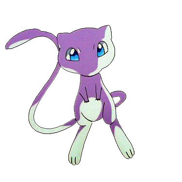

<link href="https://cdnjs.cloudflare.com/ajax/libs/font-awesome/5.15.3/css/all.min.css" rel="stylesheet">
<!DOCTYPE html>
<html lang="en">
<head>
    <meta charset="UTF-8">
    <meta name="viewport" content="width=device-width, initial-scale=1.0">
    <title>h</title>
    <link rel="stylesheet" href="styles.css"> <!-- Add your CSS file if needed -->
</head>
<body>
    </audio>
    
    <script src="script.js"></script> <!-- Add your JavaScript file -->
</body>
    </html>
<body>
    <div class="play-button-container">
        
    </div>
    <div class="container">
        <header>
             <!-- Replace "profile.gif" with your profile GIF URL -->
            <h1>farex</h1>
            <p>Manager in Elixir</p>
            <h2>My socials below<h2>
        </header>
        <nav>
            <ul class="links">
              <nav>
    <ul class="links">
        <li>
            <a href="https://www.twitter.com/_farex/" target="_blank">
                <i class="fab fa-twitter"></i> Twitter
            </a>
        </li>
        <li>
            <a href="https://discord.gg/farexlounge" target="_blank">
                <i class="fab fa-discord"></i> Discord
            </a>
        </li>
    </ul>
</nav>
            </ul>
        </nav>
    </div>
    <audio id="audio-player">
        <source src="song.mp3" type="audio/mpeg"> <!-- Replace "song.mp3" with your song file -->
    </audio>
    <footer>
        <p>&copy; website by hxnted</p>
    </footer>
    <script>
        const audioPlayer = document.getElementById("audio-player");
        const playButtons = document.querySelectorAll(".play-button");
        let isPlaying = false;

        playButtons.forEach(playButton => {
            playButton.addEventListener("click", () => {
                if (isPlaying) {
                    audioPlayer.pause();
                    playButton.src = "play-button-icon.png"; // Replace with play button icon
                } else {
                    audioPlayer.play();
                    playButton.src = "pause-button-icon.png"; // Replace with pause button icon
                }
                isPlaying = !isPlaying;
            });
        });

        window.addEventListener("load", () => {
            const contentElements = document.querySelectorAll(".container, .play-button-container, footer");
            contentElements.forEach(element => {
                element.classList.add("fade-in");
            });
        });
    </script>
</body>
</html>